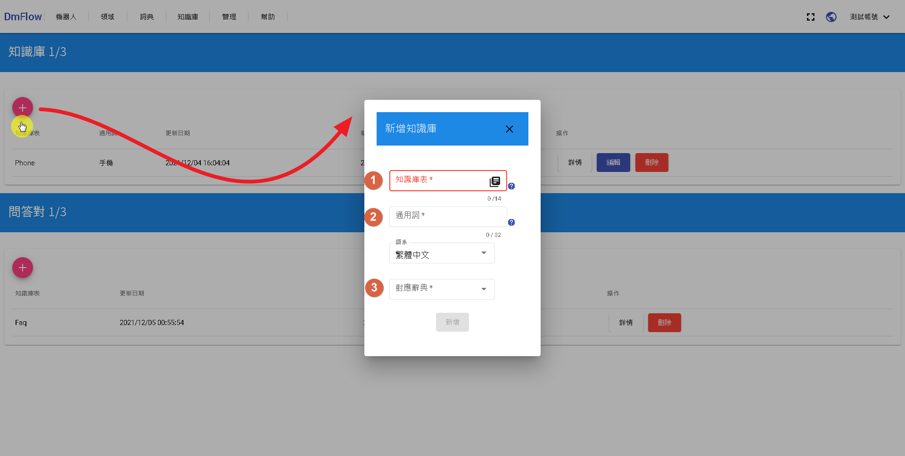
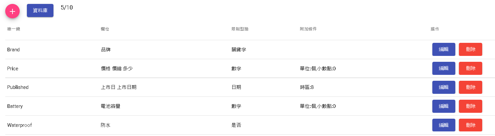
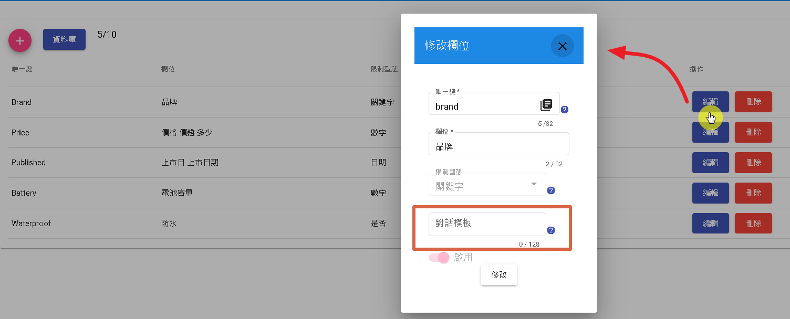
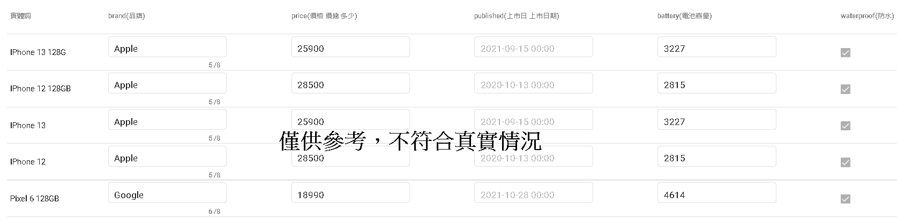
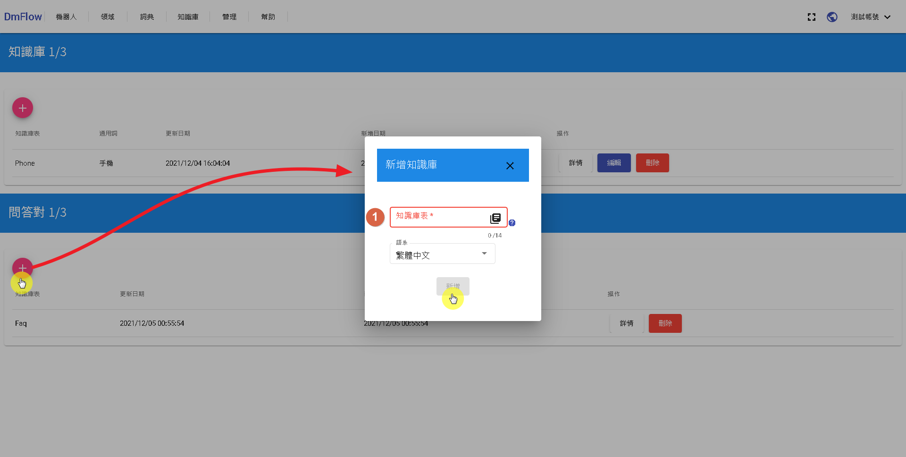
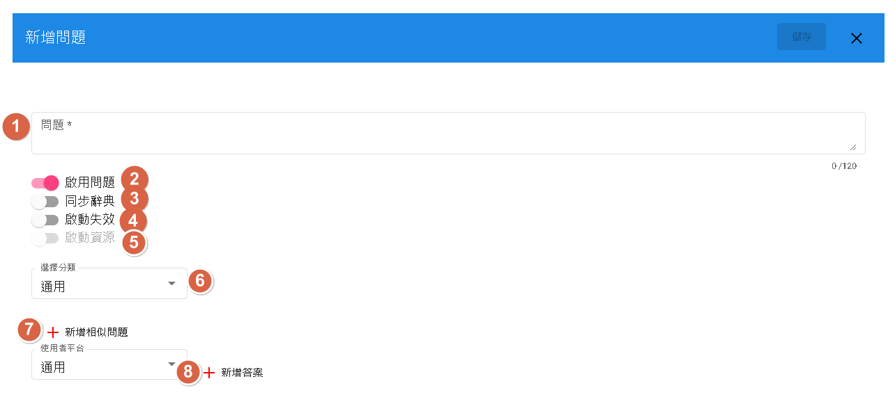
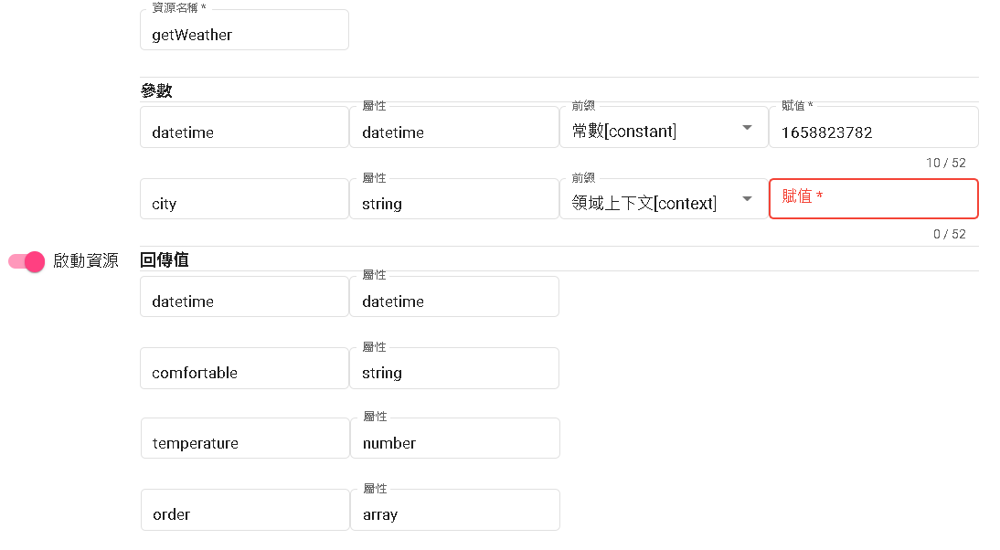

知識庫介紹
此版本知識庫分為兩種，一種為"知識庫"，一種為"問答對"。
知識庫[表格問答]
用戶只需要填寫實體與屬性值，不用在意意圖說法、詞槽如何填寫，快速上手。 舉例:
- 實體加上屬性，如:Pixel 6的電池容量是多少?=> 實體為"Pixel 6"，屬性為"電池容量"。
- 屬性條件查詢滿足條件之實體，如:品牌是ASUS的手機有哪些?=> 條件為"品牌"等於"ASUS"。
支援能力
| 問題型態 | 支持問法 | 支援 | 範例 |
|---|---|---|---|
| 簡單查詢 | 單屬性 | v | Pixel 6的電池容量是多少? |
| 多屬性 | v | Pixel 6的電池容量是多少?有沒有支援快充? | |
| 多實體 | v | Pixel 6和iphone12的電池容量是多少?有沒有支援快充? | |
| 條件查詢 | 屬性條件 | v | 價格大於1萬的手機有哪些 |
| 屬性排序 | v | 價格最貴的手機是哪支? | |
| 推理計算 | 聚合計算(求和、求平均) | x(部分支援求和) | [第一句]我想找國別是日系的車?[第二句]這些價格總共多少? |
| 判斷計算 | v | Pixel 6有沒有支援快充?[同屬性查詢] | |
| 比較計算 | x | iphone12比Pixel 6貴了多少? | |
| 分組、行計算 | x |
何時使用表格問答
一般搜尋只能顯示根據搜尋的"文字"有關的文章，例如：我要找尋作者為xxx的文章，我們無法從文字知道你想表達的問題，通常會拆分成"作者"、"xxx"，並新增一個欄位讓使用者選擇作者是誰。
如果查詢的資料可以有系統的分類，則同樣問句"我要找尋作者為xxx的文章"，自動拆分為作者=xxx時，可以快速滿足用戶需求。
- 相對於其他場景，表格問答相對維護容易。
使用流程
| 步驟 | 必要性 | 說明 |
|---|---|---|
| 1 | v | 點選新增知識庫 |
| 2 | v | 新增知識庫表 |
| 3 | x | 修改知識庫表 |
| 4 | v | 新增知識庫資料 |
| 5 | v | 通過領域綁定知識庫 |
| 6 | v | 發布開發版本 |
| 7 | x | 測試 |
| 8 | v | 發布測試版本 |
1.新增知識庫
- 1.點選[+]
- 2.在"新增知識庫"填寫點標[1]知識庫表、點標[2]通用詞、點標[3]對應辭典
- 3.當填寫完成後，底下的新增會亮起，並點新增。
知識庫表：
- 支援十四位小寫英文以及_(下划號)
通用詞：
通常稱呼此表存入的物件，例如汽車就是"車 汽車"等。用空白當作一個詞。
搜尋時會根據，我想找汽車或我想找車...等，去做表格問答。
對應辭典：
- 根據現有辭典去做實體顯示。

2.新增知識庫表
內容：
- 唯一鍵:用英文表示唯一名稱，例如：價格通常會用price。
- 欄位:可用空白分隔欄位，用於搜索名稱。例如：價格會用"價格 多少 價錢"...等。
- 限制型態:分為"關鍵字"、"數字"、"日期"、"文本"或"是否"。
- 附加條件 
限制型態(補充):
- 關鍵字：欄位屬性的值可以用於搜索。
- 數字：如：""價格"(屬性)在"100萬以上"(值)的有那些?"，會搜尋價格在100萬以上的實體。
- 日期：可以判斷"下禮拜"、"特定日期"等問題。
- 文本：跟關鍵字不同，無法被用於搜索。
- 是否：判斷"有沒有"、"是不是"等問題。
附加條件(補充):
- 數字：包含了單位以及小數點。目前單位僅支援個、百、千、萬、億以及兆，主要目的但為單位轉換[但尚未實裝]，如：公斤轉克等
- 日期：包含了時區。
3.修改知識庫表
當進行修改時，可以發現有"對話模板"，假設實體為IPhone 13，價格為25900元，則系統會回傳
{
"subject": {
"name": "IPhone 13",
"price": "25900"
}
}
模板：${#subject.name}的售價為${#subject.price}元。會顯示成"IPhone 13 128G的售價為25900元"。

4.新增知識庫資料
依照實體為列，欄位為行，依序填入對應的值即可完成資料庫。 
步驟5~8
可跳至最下面，[接著讀-領域介紹]開始閱讀。
問答對
問答對通常是有固定的答案，如果問答對中沒有符合的答案，機器人就無法取得該答案回覆給用戶。
新增問答對
我們點選[+]，在點標[1]輸入最多十四位小寫英文以及_(下划號)，點取按鈕"新增"。 
新增問題
- 點標[1]：輸入符合條件的用戶問題。
- 點標[2]：是否啟用該問題
- 點標[3]：是否啟用同步辭典，如果某辭典為：番茄，同義詞：西紅柿。而問題是"你好哪裡有賣番茄"，此時會延伸"你好哪裡有賣西紅柿"。
- 點標[4]：啟用啟動失效，會出現"生效時間"以及"失效時間"，目前必須兩個都填入值才能儲存。
- 點標[5]：可以啟用資源外接API，需要再綁定領域後才可使用領域資源
- 點標[6]：分類，可自訂分類，將問題整理放入。
- 點標[7]：將用戶問題做延伸。
- 點標[8]：平台分為通用以及開啟的渠道，答案在渠道沒開啟或是該渠道沒新增答案時，以通用為主，答案目前僅有text、template以及redirect 
回答型態
- 1.text :純文本
- 2.template:模板[可透過resource回傳值注入]
- 3.redirect:(轉向場景[須搭配Bot Flow])
參數前綴:
- constant:表示常數，代表輸入的都當成字串處理。
- context:非業務資源使用參數，或是機器人流程傳遞參數使用。
- config:領域內管理有個"全域參數"，可以提供鍵(key)，一般用於有固定值的auth或是secret的字串需要提交給用戶機器做驗證。
template模板輸出詳情
- context->根據回傳值的鍵(key)做輸出，例如:${#context.comfortable}。
- extractTime->將時間轉為字串的功能，例如:${%extractTime(#context.datetime,'yyyy年MM月dd日HH:mm','')}
- listOutput->將陣列轉為字串的功能，例如:${%listOutput(#context.order,'${#item_break}第${#item_index}筆:日期${#item.date}, 金額為:${#item.money};' ,'1')}
extracTime
第一個參數為回傳的數值[秒數]僅支持參數，尚未支持常數注入，第二個參數為日期格式，第三參數[尚未實裝]指定時區，預設會用機器人流程的時區。
listOutput
第一個參數為回傳的數值[需為array]，第二個參數為字串item_break為換行，item.xxx為當前forEach的鍵(key)，不支援nested(鑲嵌)
透過下圖選擇資源，並呼叫該資源得到JSON回應為
{
"temperature": 16,
"datetime": "1665990946",
"next_d": [
{
"rain_per": "100",
"date": "2022-10-18"
},
{
"rain_per": "10",
"date": "2022-10-19"
}
],
"comfortable": "稍有寒意"
}

模板原本輸出
舒適度:${#context.comfortable}，溫度${#context.temperature}度c 時間${%extractTime(#context.datetime,'yyyy年MM月dd日HH:mm','')} ${%listOutput(#context.next_d,'${#item_break}第${#item_index}筆:日期${#item.date}, 下雨機率:${#item.rain_per}%;' ,'1')}
模板替代輸出
舒適度:稍有寒意，溫度16度c 時間2022年10月17日14:48
第1筆:日期2022-10-18, 下雨機率:100%;
第2筆:日期2022-10-19, 下雨機率:10%;
如果傳遞值未填寫或發生錯誤，僅會做參數值取代為空。
舒適度，溫度度c 時間